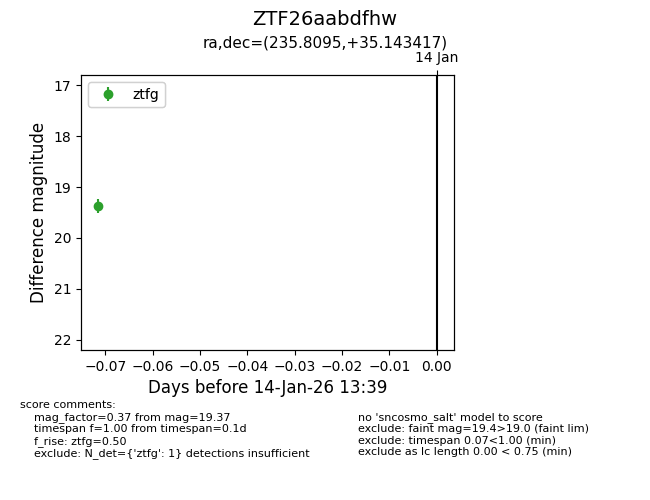
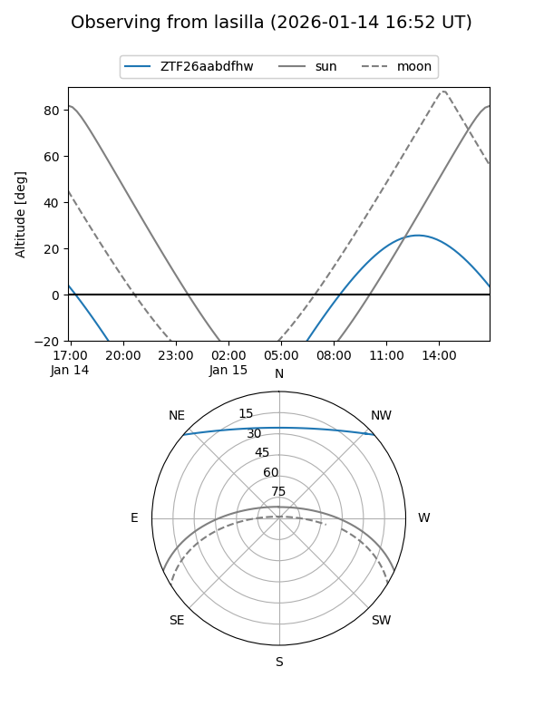
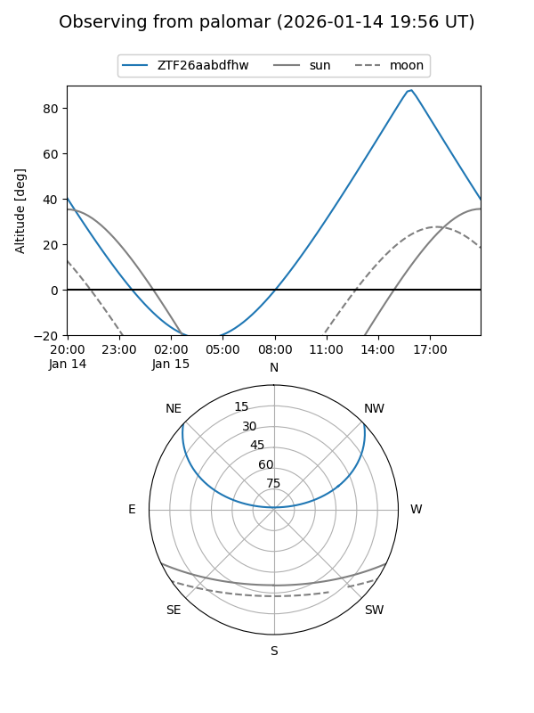

ZTF26aabdfhw
Target ZTF26aabdfhw at 2026-01-14 13:40
Aliases and brokers:
FINK: link
Lasair: link
ALeRCE: link
alt names
ZTF26aabdfhw (ztf,fink_ztf)
Coordinates:
equatorial (ra, dec) = 235.8095,+35.14342
equatorial (HMS+DMS) = 15:43:14.28,+35:08:36.30
galactic (l, b) = (56.1826,+52.66992)
Flags:
Photometry:
last ztfg=19.37
1 ztfg detections
Lightcurve

Visibility


Additional plots